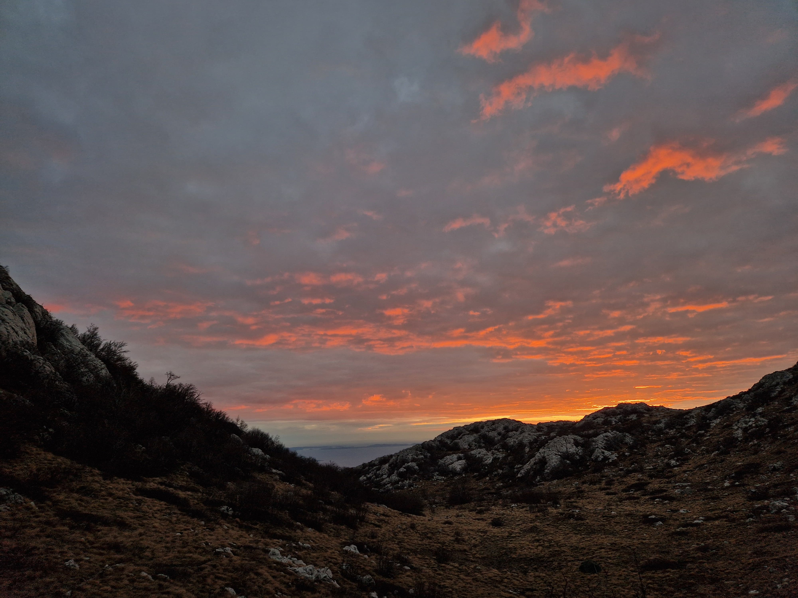
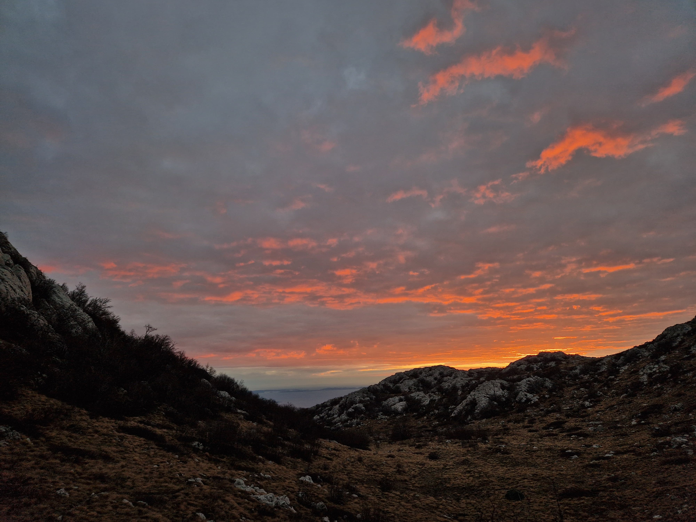
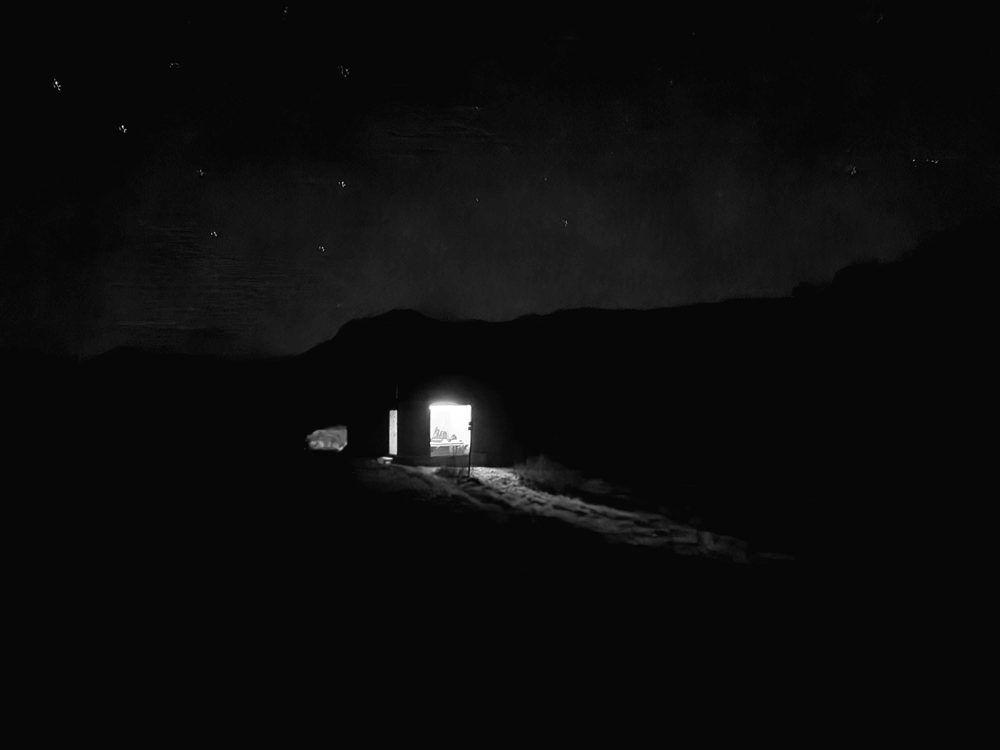
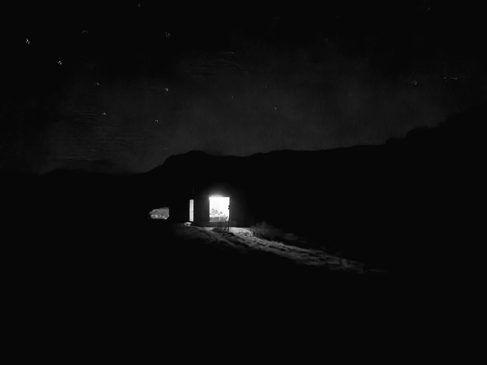
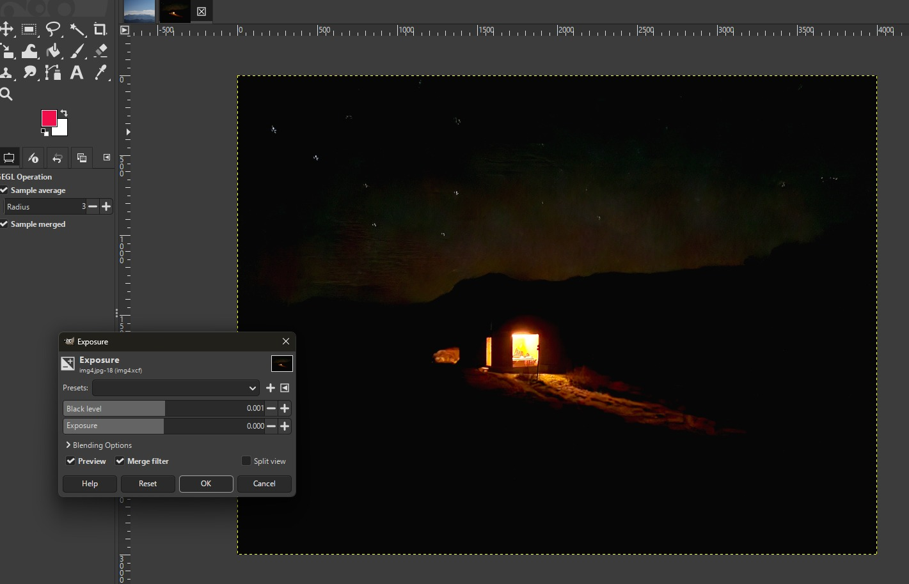
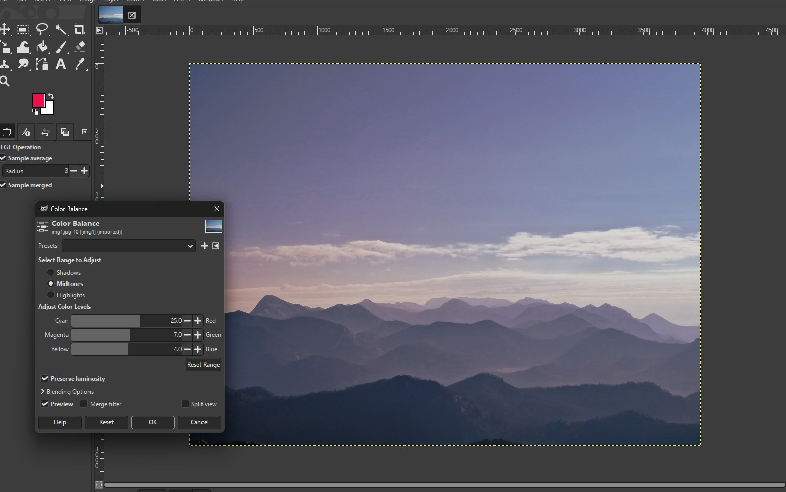
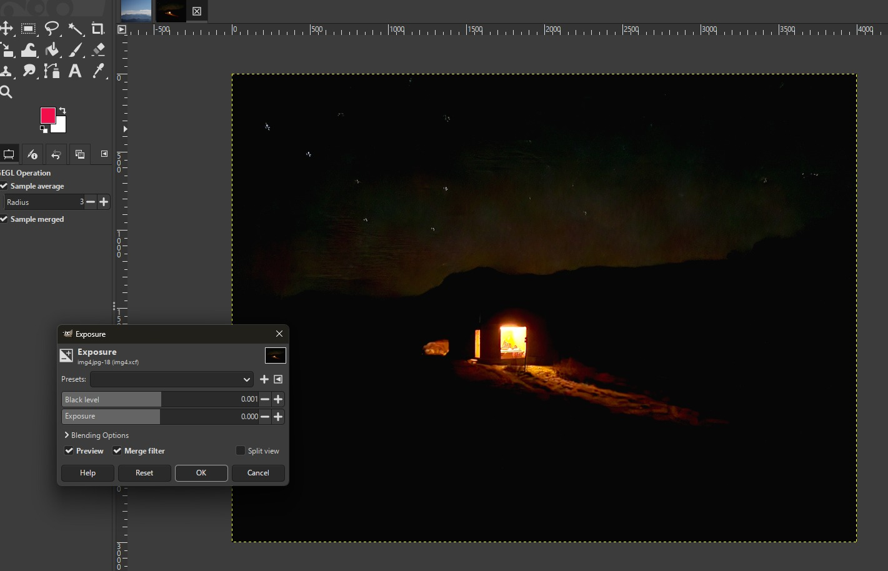
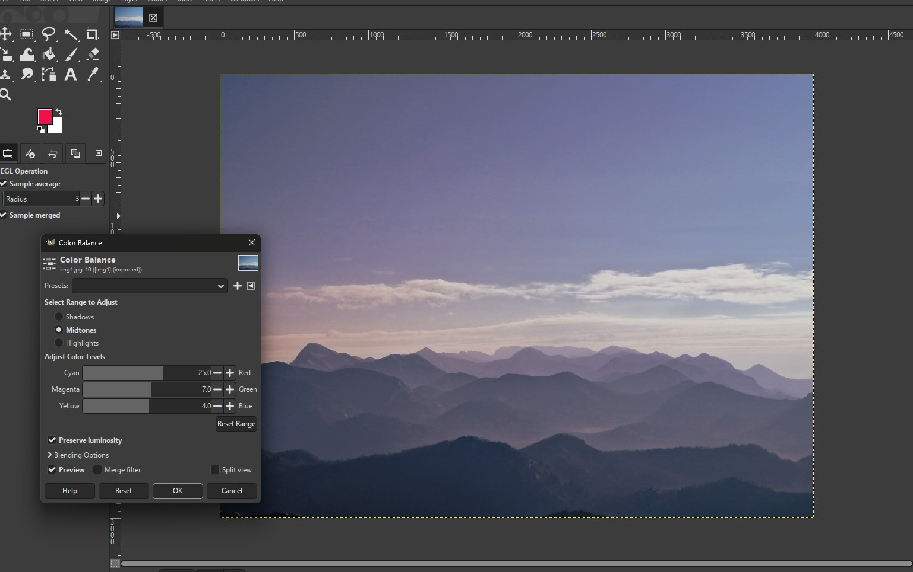

Galerija
Klikni na sliku za uvećanje.
 

 



Postupak pri izradi fotografija (GIMP)
Nakon što sam otvorio fotografiju u programu GIMP, kliknuo sam desni klik na sloj te ga duplicirao kako bih zadržao originalnu verziju slike.
Zatim sam u gornjem izborniku otvorio karticu Colours te odabrao opciju Brightness-Contrast i Levels, pomoću kojih sam prilagodio svjetlinu i kontrast fotografije.
Nakon toga sam koristio opciju Curves kako bih dodatno podesio tonove slike i dobio prirodniji prijelaz između svijetlih i tamnih dijelova fotografije.
U sljedećem koraku sam po potrebi izrezao fotografiju pomoću alata za Crop, kako bih uklonio nepotrebne dijelove kadra i naglasio glavni motiv.
Zatim sam u kartici Colours prilagodio zasićenost boja koristeći opciju Saturation, pri čemu sam pazio da boje ostanu realne i prirodne.
Na pojedinim fotografijama sam dodatno prilagodio balans bijele boje kako bi svi kadrovi imali sličan ton i atmosferu.
Nakon obrade boja dodao sam blago izoštravanje slike pomoću opcije Sharpen, kako bi se detalji poput rubova planina i staza jasnije vidjeli.
Kao završni korak smanjio sam rezoluciju fotografija te ih exportao u JPG/PNG format, prilagođen za prikaz na web stranici.
 


